"We meet after school from 3-4 on Tuesdays and Thursdays. We walk or run for 45 minutes and then have a healthy snack. We give students incentives for miles walked or run and have a big celebration at the end of the year and walk to a nearby park."
– Pam, PE Teacher
New Here?
Any school starting a new run club has key decisions to make. Who will lead the club? When and where will it take place? How will success be celebrated? This quiz will coach you through all these considerations and more while offering a peek at how Billion Mile Race schools across the country make it happen. You likely won’t have all the answers out of the gate. That’s okay! Use this quiz as a guide to begin your planning.
What’s your role?
Schools can implement run clubs all year long or for shorter durations. What do you think would work best for your school? (Select all that apply)
How they do it
"Our morning run is open to 3rd, 4th, and 5th graders and is conducted on Tuesday and Thursday mornings in the fall. We have access to the middle school track, and this is where the members walk and run laps. Plastic tokens are earned for miles completed."
– Lori, PE teacher
– Lori, PE teacher
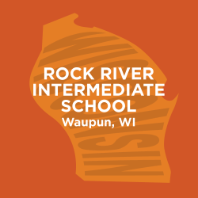
"This is my 3rd year with my Running Club. We meet after school in the fall and spring. My kids keep track of laps run on their punch card, which are then converted to mile that I track manually now on a spreadsheet and earn incentives based on the number of miles they run."
– Jackie, PE Teacher
– Jackie, PE Teacher
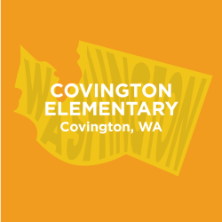
"We take part in the 100 Mile Club and our students have the opportunity to walk, jog, or run every day during recess to accumulate miles and earn prizes for the entire school year."
– Bonnie, PE Teacher
– Bonnie, PE Teacher
When will your run club take place? Select all that apply.
How they do it
"We allow our students to enter the school 30 minutes early each morning and participate in Morning Walk. Our students find their tracking sheet, put on a pedometer and walk, jog, and run for 30 minutes. At the end of the 30 minutes they record their steps. Every Monday students receive prizes like toe charms for mileage and attendance. Last year we had 48% of our school participate!."
– Holly, PE Teacher
– Holly, PE Teacher
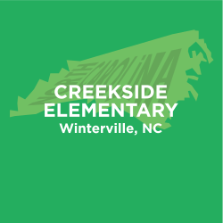
"In our 5K running club students in 3rd, 4th, and 5th grade stay after school 2 days a week for training. As a club, we train for 8 weeks to prepare for our 5k event. We have one race in the fall and one race in the spring. Our goal is to equip students with the skills to set goals, make a plan, and execute it. We select one community outreach event and support them by running in the race."
– Jimmy Bowen, PE Teacher
– Jimmy Bowen, PE Teacher
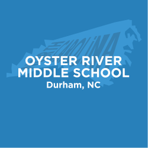
"In my PE class we do a Personal Fitness Challenge. Every student runs or walks a 1.2 mile course during P.E. for a 6 week training period. At the end of the 6 weeks we have a school-wide road race on the course."
– Alida Carter, PE Teacher
– Alida Carter, PE Teacher
How many days a week will your run club take place?
How they do it
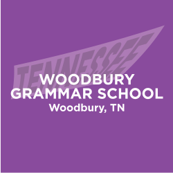
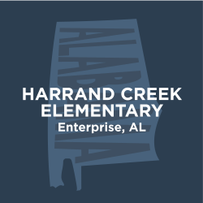
"We have a before-school running club that meets 3 mornings a week. We average approximately 175-200 students each morning with a total school enrollment of 423. One Saturday a month we have a family fun run where families can come out for an hour and students can work towards their hundred mile goal. Students also run/walk during their physical education class several days a week."
– Shelley, PE Teacher
– Shelley, PE Teacher
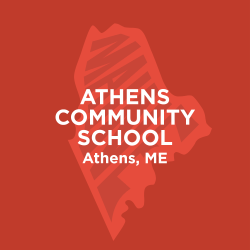
"We designed our own run club where every day for the last 10 minutes of morning recess, the entire school walks together doing laps around the grounds."
– Kassie, Classroom Teacher
– Kassie, Classroom Teacher
How long will your run club sessions be?
How they do it
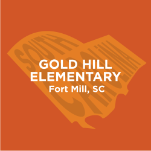
"Our Jog & Fit Club takes place for 20 minutes every morning, from 7:20-7:40am. On good weather days, students will report to their classroom, drop off their belongings, grab their mileage card and meet me at the track. On bad weather days, students will report to their classroom, drop off their belongings, and report to the gym."
–
–
"The kids have ten minutes at the start of every gym class to walk or run around the outside field. 10 laps is a mile. We have a charting system that they use to track their mileage. We have certain landmarks they can get to like the Liberty Bell, Ocean City New Jersey and Niagara Falls. At the end of the school year we take each class on a 2 hour hike in a local state park."
– Pigeon, PE Teacher
– Pigeon, PE Teacher
"Our run club is called Happy Feet. Students sign up and on club days report to the gym. We will either walk around the gym or outside for about 45 minutes."
– Melissa, PE Teacher
– Melissa, PE Teacher
Where will students walk & run? Select all that apply.
How they do it
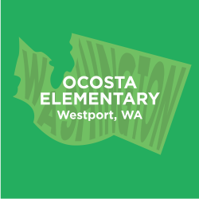
"In our Wildcat Fitness Club kids walk and run the track at recess and get their laps counted. Awards are given out at various goals. 5 miles = $.50 at the school store, 15 miles is a wildcat fitness pencil, 30 miles is a medal, 60 miles is a trophy and 100 miles is a T-shirt."
– Chris, PE Teacher
– Chris, PE Teacher
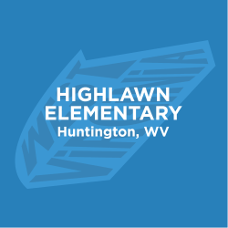
"In our Husky Challenge program students walk every morning from 7:30 to 7:50 and during their lunch recess. A small asphalt walking track around our playground provides students with a safe place to walk where there are no concerns about traffic. On days when the weather prohibits going outside we walk the school hallways."
– Jeff, PE Teacher
– Jeff, PE Teacher
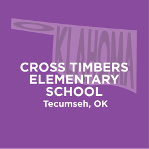
"On Monday, Wednesday, and Friday students can choose between our cross country trail and our 1/8 mile walking trail and get punches on a card for every lap they complete. When they finish a card they turn it in for a prize. Prizes include key chain items such as a small foot, running man, mega foot, and dog tag. Each 9 weeks we take the top 10 walkers on a fun physical activity type field trip."
– Amanda, PE Teacher
– Amanda, PE Teacher
How will miles be tracked? Some run clubs track students' individual miles while others estimate miles that students run as a group
How they do it
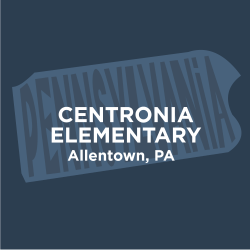
"Our school’s Mileage Club runs on Tuesdays and Thursdays every week during the school year in the Fall and Spring. K-5 students walk, run, and jog around the school's walking track. For every lap they get a popsicle stick. Four Popsicle sticks equal a mile for which they earn a foot charm."
–
–
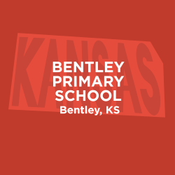
"In our Miles Club 1st-3rd grade students accumulate miles during the school day through laps around the playground, inside the building, or around the perimeter of the building. Students wear pedometers and get steps that are converted into mileage. Students are encouraged by their teachers, who get their own miles by wearing pedometers. Classroom teachers turn step counts into me and I record and display their progress."
–
–
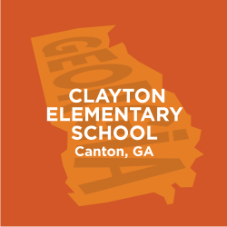
"Students come to the gym before school, from 7:10-7:30 to walk jog or run. Upbeat music is playing to encourage movement and awaken participants! Lanes are clearly marked for walking or running for safety. Laps are tallied for entry to the Billion Mile Race. We also have classes that utilize their recess time to add miles to our total."
–
–
The most successful run clubs have several leaders at the helm. Teachers, nurses, parents, administrators, school staff and volunteers can all play this role. How many adults do you anticipate getting involved?
How they do it
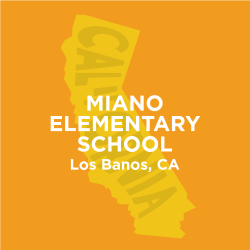
"Our Miano Mileage Club was started last year by a group of 5 teachers. The students run after school on Mondays and Thursdays for 30 minutes. Teachers donate their time as coaches. After 4 months of training, the students are able to participate in a 5k fun run to show their parents and peers their hard work."
–
–
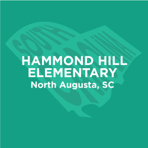
"Our run club meets twice a week 30 minutes before school for 7 weeks in the spring. Students walk or run as many laps around the track in that 30 minute time period as they can. Students earn bracelets for every 5 miles they complete. Parent volunteers help record the students’ miles by punching a hole in a card that the student carries every time they complete a lap (quarter mile)."
–
–
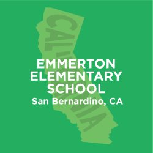
"Our Emmerton Walking Club has students/staff come before school and walk around a designated area on our playground. Staff members punch their Emmerton Walking Club punch card. Students are recognized at the quarterly assemblies."
–
–
Where will students walk & run? Select all that apply.
How they do it
hello world
"We have two running clubs: one for grades 2-3 and one for Kindergarten-1. The running clubs meet after school and do a variety of exercises as well as build stamina for races. At the end of the year, they participate in a fun run!"
–
–
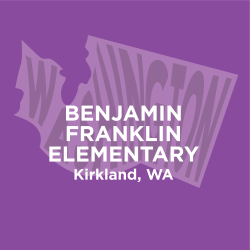
"We encourage all our students to run 25 miles at school between Sept-Nov and then a final 1.2 miles on the Seattle Marathon Course. We provide tracking and incentives to students as well as running support at recess and before school."
–
–
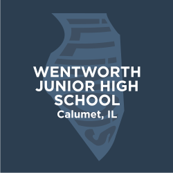
"I conduct an after school running club in the fall. I have offered this opportunity to all students for the last four years. Our numbers have steadily grown over this time from 28 the first year to over 90 this year. I have tied our culminating event in with the Calumet City Park District's annual 5K Race."
–
–
How will you make your run club fun for students and celebrate success? Select all that apply.
How they do it
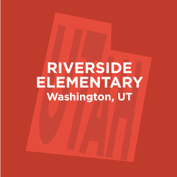
"In our run club students run and walk as many laps as they desire during lunch recess twice a week. Each lap is 1/4 mile. We challenge all students to run 105 laps (equal to a marathon) over the course of the year. At the end of the year we have a party and assembly for all students who completed 26.2 miles. The top students are acknowledged on stage."
–
–
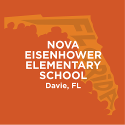
"On all of our early release days we host a "Walk and Talk". We play music and all 800 of our students walk around the school, walking, talking and singing."
–
–
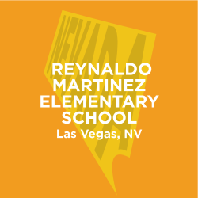
"In our run club students run laps during PE and also run laps as brain breaks in their classroom. Students earn prizes for each 10 miles they complete. Class challenges occur every month for the class with the most miles and they get extra recess time."
–
–
Bam!
You're well on your way to designing an A+ run club. To send you on your way, we've got two tools for you to download
Use this summary of your quiz answers as a quick reference guide when planning your run club with your colleagues and administrators.
Billion Mile Race Quick Start Toolkit – In this toolkit you’ll find detailed guidance on scheduling, mapping a route for your run club, tracking miles and keeping students motivated